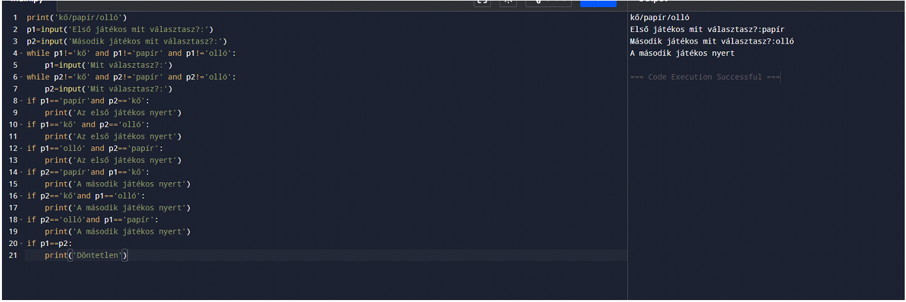
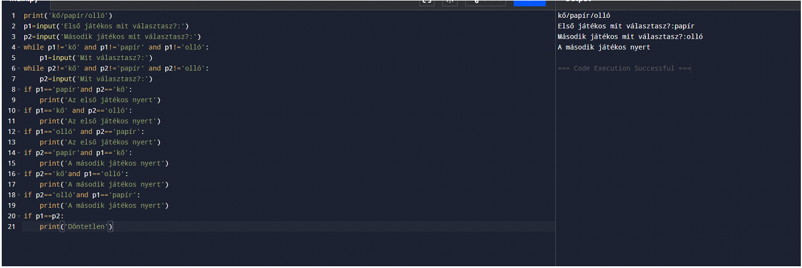

Programozás Alapjai
Önreflexó
A Programozás alapjai tantárgy számomra egy nagyon hasznos és kihívásokkal teli tapasztalat volt. Rengeteget tanultam a programozás alapjairól, és sikerült mélyebben megérteni a számítógépes rendszerek működését és azt, hogyan lehet hatékonyan kommunikálni velük kódban. A tantárgy első és legfontosabb tanulsága számomra az volt, hogy a programozás nemcsak a kódolásról szól, hanem a problémák megoldásának egy nagyon strukturált módja. A programozás logikáját és az algoritmusok fontosságát kezdtem el igazán megérteni. Az alapvető programozási fogalmak – mint a változók, ciklusok, feltételek és függvények – azok az építőelemek, amelyek minden program mögött ott vannak.
Tematika:
- Algoritmusok és programozási logika
 
